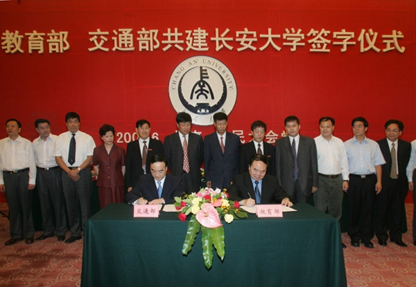

长安大学直属国家教育部，是教育部和交通运输部、国土资源部、住房和城乡建设部、陕西省人民政府共建的国家“211工程”重点建设大学，国家“985工程优势学科创新平台”建设高校，国家世界一流学科建设高校。2000年由始建于二十世纪50年代初的原西安公路交通大学、西安工程学院、西北建筑工程学院合并组建而成。学校座落于历史文化名城西安，现有校本部和渭水2个校区、太白山和梁山2个教学实习基地，校园面积3745亩。校本部毗邻西安大雁塔，渭水校区位于国家级西安经济技术开发区。60多年来，长安大学逐步发展成为以工为主，理工结合，人文社会科学与基础学科协调发展，以培养公路交通、国土资源、城乡建设等专业人才为办学特色，在国内外有一定影响的高等学府，已为国家培养各类毕业生25万余人。

学校设有21个教学院（系），有5个国家级重点学科，26个部省级重点学科，8个博士后科研流动站，9个一级学科博士点，34个一级学科硕士点，40个本科专业类别，10个硕士专业学位授权类别，16个工程硕士招生领域，是国家大学生文化素质教育基地、中国人民武装警察部队后备警官选拔培训基地。现有全日制学生33000余人，其中博士研究生、硕士研究生、外国留学生9000余人。
学校有2个国家工程实验室，4个高等学校学科创新引智基地，8个教育部重点实验室和工程研究中心，15个交通运输部、国土资源部、住房和城乡建设部、陕西省重点实验室和工程技术研究中心，5个陕西省人文社会科学重点研究基地。拥有世界高校唯一的汽车综合试验场。
学校现有专任教师2027人，其中，中国工程院院士3人，长江学者6人，教授、副教授1100余人，博士生导师166人，硕士生导师755人；有省部级有突出贡献专家5位，80余人入选新世纪百千万人才工程国家级人选和教育部、交通运输部、陕西省等各类高层次人才计划。
学校坚持产学研相结合，近年来，共承担了包括国家973、863和国家自然科学基金等重点科研课题在内的科研项目8770余项，荣获包括国家科技进步一等奖在内的国家科技奖励20项，省部级一等奖28项，其他省部级奖励200余项；承担了包括国家规划课题在内的各类教育教学研究项目380余项，获得国家级和省级教学成果奖50余项。年科研经费超过7亿元。
学校编辑出版《中国公路学报》《交通运输工程学报》《交通运输工程学报（英文）》《建筑科学与工程学报》《地球科学与环境学报》《长安大学学报（自然科学版）》《长安大学学报（社会科学版）》《筑路机械与施工机械化》等8种学术性期刊，其中1种为国家百强报刊，2种为国家重点建设期刊，2种Ei数据库收录期刊，5种为中文核心期刊。《中国公路学报》《交通运输工程学报》连续入选百种中国杰出学术期刊。
学校1956年开始招收外国留学生，先后培养美国、德国、日本、澳大利亚、越南、坦桑尼亚、也门等70多个国家和地区的留学生4000多人，现有各类留学生800余人。学校是我国最早承担援外教育和首批招收港、澳、台学生的高校之一。近年来，学校适应高等教育国际化的发展趋势，加大对外交流与合作的力度，先后与美国、英国、俄罗斯、乌克兰、日本、韩国等20多个国家和地区的100余所高等学校及科研机构建立了校际合作，开展教师互访、学生联合培养、合作科研、联合共建实验室等多种形式的交流合作，主办承办了一系列高水平国际国内学术会议。
经过多年的办学实践，学校树立了“育人为本、质量至上、追求卓越”的办学理念，赢得了良好的社会声誉。面对新的历史征程，学校坚持高举中国特色社会主义理论伟大旗帜，全面贯彻党的教育方针，以立德树人为根本，秉承“弘毅明德笃学创新”的校训精神，坚持走“创新发展、内涵发展、特色发展”之路，按照“工科优势突出、理科基础深厚、文科发展繁荣的学科布局，全面深化综合改革，着力提高人才培养质量和教学科研水平，扎实推进一流学科建设，持续提升学校核心竞争力和综合实力，全面推进特色鲜明国际知名的研究型大学建设，为实现中华民族伟大复兴的“中国梦”做出新的更大的贡献！
地址:中国西安市南二环路中段邮编:710064 电话:+86-029-82338114校党委宣传部制作© 陕ICP备05001904号-1